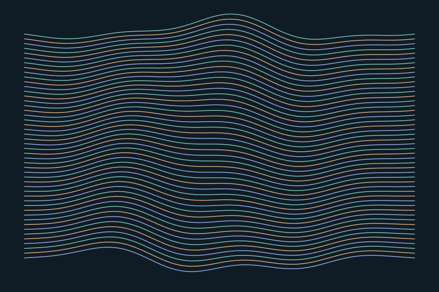
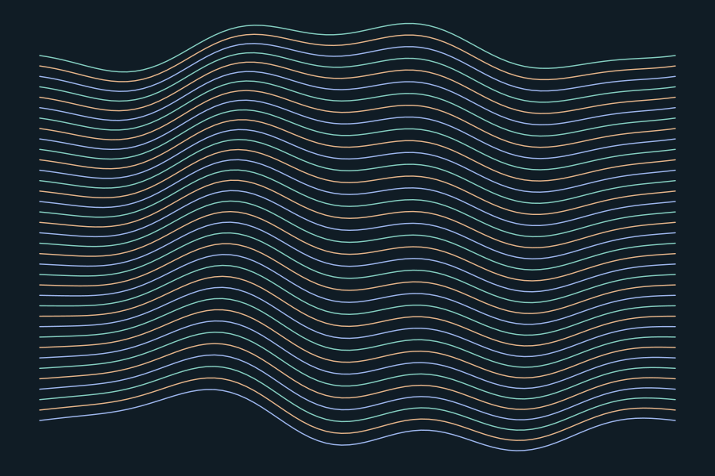
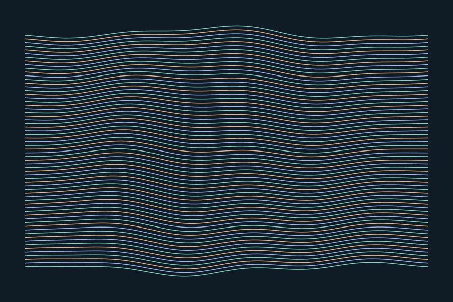

正例
规则、参数和版本随输出保留；同一输入可以重新生成相同几何。
固定规则，有限扰动。改变参数生成线场，保留种子让作品可以复现。这里的线不是海岸或声音数据。

Seed 42 / 48 lines / amplitude 45 / engine 1.0.0
默认静态；点击播放只显示一次路径。


三张图均由同一个 engine.js 输出；不是三张手工画再统一颜色。新版本修改算法后，应更新版本号。
概念展览票 / 非真实门票
Seed 73
36 lines / amplitude 70
规则、参数和版本随输出保留；同一输入可以重新生成相同几何。
无种子的随机刷新后截图，随后声称“实时城市数据”却没有来源或映射。